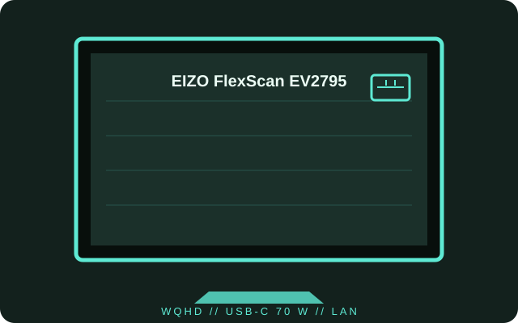

[ INDIVIDUAL COMPONENT // DISPLAYS ]
EIZO FlexScan EV2795
A 27-inch WQHD business monitor with a USB-C one-cable connection, 70 W charging and wired LAN.

IDENTIFICATION: The EV2795 is the 27-inch WQHD FlexScan model; preserve its model label and original power/network accessories.
Specifications
| Catalog subcategory | LCD displays |
|---|---|
| Exact product | EIZO FlexScan EV2795 |
| Panel and native resolution | 27-inch IPS LCD, 2560 × 1440 (16:9) |
| Native refresh | 60 Hz at native resolution |
| Luminance / contrast | 350 cd/m² typical; 1000:1 typical |
| Inputs / companion ports | DisplayPort, HDMI, USB-C with up to 70 W power delivery, RJ45 LAN and USB hub; USB-C also carries video, audio, data and network functions |
| Stand / VESA | Height, tilt, swivel and pivot adjustment; 100 × 100 mm VESA mounting |
| Power / compatibility | Built-in AC power supply, 100–240 V AC, 50/60 Hz. USB-C docking requires a host with DisplayPort Alt Mode; charging is limited to 70 W. Network bridging depends on the connected host and supported USB-C path. |
Preservation notes
Record the installed color profile, brightness and USB-C docking arrangement. Use the manufacturer cable and confirm the computer supports DisplayPort Alt Mode before diagnosing USB-C video or LAN behavior.
Manufacturer documentation and sources
- EIZO — FlexScan EV2795 product informationManufacturer product features, USB-C docking and published specifications.
- EIZO Support — EV2795 user manuals and downloadsModel documentation and downloads from the manufacturer.